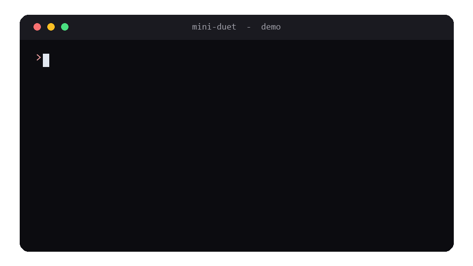
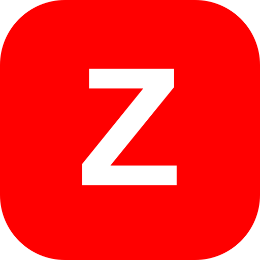

Wakes up
A scheduler runs a check-in every few hours, like the real thing.
Open source · Claude Opus 5.5
Mini Duet checks an inbox on a schedule, writes you a short brief, drafts replies, and asks for your approval before it sends anything. About a hundred lines of Python, running on your own laptop.
An independent learning project. Not Anthropic's Claude Duet app.
Four small ideas, repeated on a schedule.
A scheduler runs a check-in every few hours, like the real thing.
Claude asks to read the inbox. Your code hands the messages over.
Claude writes a short brief and drafts replies where they help.
Nothing is sent until you type y. You stay in charge.
Six steps. You need Python 3.10 or newer and an Anthropic API key.
Sign in at console.anthropic.com, add a little credit under Billing, then create a key under API keys. Copy it once and keep it safe.
git clone https://github.com/Zubair-hussain/Mime_Duet.git cd Mime_Duet
python -m venv .venv .venv\Scripts\activate # Windows source .venv/bin/activate # macOS / Linux
pip install -r requirements.txt
$env:ANTHROPIC_API_KEY = "your-key-here" # Windows PowerShell export ANTHROPIC_API_KEY="your-key-here" # macOS / Linux
python -m duet --once
Small on purpose, and built like a real project.
Sending, paying and deleting always wait for a yes.
Change the settings and the inbox in two JSON files. No code edits.
A tidy duet package, plus the single-file version from the video.
It runs on your computer and talks to Claude through the Anthropic API.
Your key lives in an environment variable and stays out of Git.
If a request is declined, the API can retry on a backup model.
A sample run with the demo inbox.

Every push is checked automatically.
A pytest suite with a fake API client. No key, no cost, no network.
Coverage is reported on every push, and the build fails below 95%.
GitHub Actions runs lint and tests on Python 3.10 to 3.13, then deploys this page.
pip install -r requirements-dev.txt python -m pytest --cov

About the builder
I build AI automations and web projects for clients. If you would like something like this for your business, let's talk.